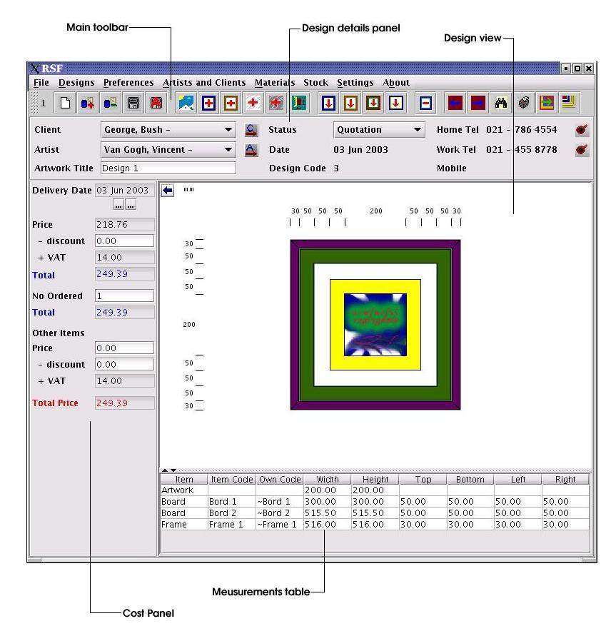

The RSF Environment
Below is the main window of RSF:

1. The Main Toolbar
The main toolbar contains buttons to perform the most often used RSF functions. All the buttons on the toolbar are duplicated in the menus where the functions can be accessed by mouse or by keyboard. See the main toolbar section for more information on the toolbar buttons.
2. Design details panel
The design details panel contains general information about the current selected design. The two buttons situated next to the Client and Artist fields will open the Clients and Artist screens respectively and can be used to quickly capture client or artist information. Note that if a current design has been selected and the user navigates to the Client or Artist windows via one of these buttons, the relevant fields will automatically be updated with the last item selected in the respective windows.
Two switches ( )
are situated on the right hand side. The top one minimizes or
maximizes the details panel to provide a larger area for the design
view, while the bottom one displays the method preference settings
specific to the current design. See the section Changing
method preferences of a specific design.
)
are situated on the right hand side. The top one minimizes or
maximizes the details panel to provide a larger area for the design
view, while the bottom one displays the method preference settings
specific to the current design. See the section Changing
method preferences of a specific design.
3. Design View
The design view displays the current design. To change the display settings, double click on any open space in the design view or go to Settings | Settings and select the design settings tab. See Changing environment settings for details on the options provided.
Double click on any of the items to edit the item settings.
4. Measurements table
The measurements table contains a list of all the items in the current design. Double click on one of the rows to edit the item settings of the selected item.
4. Cost Panel
The calculated price of the current design is displayed on the cost panel.